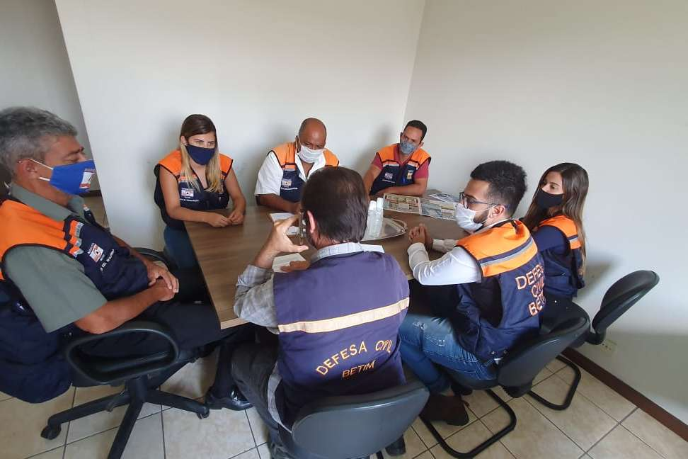

SUPERINTENDÊNCIA DE DEFESA CIVIL
Compete à Defesa Civil definir estratégias e diretrizes para orientar as ações de prevenção e redução de desastres naturais. O trabalho da superintendência consiste, também, na prestação de auxílio à população, bem como na restauração do serviço público, compreendendo medidas de prevenção e assistência. A Defesa Civil é a organização de toda a sociedade para a autodefesa e fundamenta-se no princípio de que nenhum governo, sozinho, consegue suprir a todas as necessidades dos cidadãos.Uma comunidade bem preparada é aquela que tem mais chances de sobreviver. As ações da defesa civil são atividades permanentes que se desenvolve por meio de cinco fases de ações:
Prevenção: medidas adotadas visando evitar a ocorrência de desastres;
Preparação: capacitação e treinamento dos agentes públicos e da população para atuar frente a eventos inevitáveis;
Mitigação: busca constante pela minimização de riscos e desastres em todas as demais fases.Como acionar a Defesa Civil
Ao telefonar para 199, esteja preparado para dar as informações.
Identifique-se:
Diga seu nome e seu telefone.
Onde aconteceu:
Dê o endereço completo, identificando rua, número, bairro, cidade.
O que aconteceu:
Seja breve, diga apenas o essencial. Contudo a defesa ou proteção civil deverá começar no nível mais baixo e só deverá passar para o próximo nível organizacional quando os recursos do nível antecedente estiverem esgotados.

O que é Defesa civil? A defesa civil ou proteção civil é o conjunto de ações preventivas, de socorro, assistenciais e reconstrutivas destinadas a evitar ou minimizar os desastres naturais e os incidentes tecnológicos, preservar a moral da população e restabelecer a normalidade social.
A organização sistêmica da defesa civil no Brasil, se deu pela criação do Sistema Nacional de Defesa Civil (SINPDEC), em 1988, sendo reorganizado em agosto de 1993 e atualizado em 2005.
“Você não vai encontrar ninguém para sorrir por ti, então não deixe de sorrir”. “É em meio a dificuldade que se encontra a oportunidade”.
Atendimento de segunda-feira a sexta-feira das 9h às 17h - Voltar para o inicio
Rua Pará de Minas, 640 • Brasileia • Betim-MG CEP: 32600-412 • Tel.: (31) 3512-3000 - Prefeitura Municipal de Betim - MG - Uma Cidade de Todos - Estamos aqui para cuidar de você